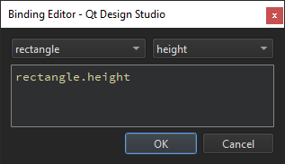

Scalable Layouts
The position of a component in a UI can be either absolute or relative to other components. The visual components exist at a particular location in the screen coordinate system at any instant in time. The x and y coordinates of a visual component are relative to those of its visual parent, with the top-left corner having the coordinate (0, 0).
If you are designing a static UI, manual positioning provides the most efficient form of positioning components. For a dynamic UI, you can employ the following positioning methods:
- Setting Bindings
- Setting Anchors and Margins
- Aligning and Distributing Components
- Using Positioners
- Using Layouts
- Organizing Components
Setting Bindings
Property binding is a declarative way of specifying the value of a property. Binding allows a property value to be expressed as a JavaScript expression that defines the value relative to other property values or data accessible in the application. The property value is automatically kept up to date if the other properties or data values change.
Property bindings are created implicitly whenever a property is assigned a JavaScript expression. To set JavaScript expressions as values of properties in the Properties view:
- Select the
 (Actions) menu next to a property, and then select Set Binding.
(Actions) menu next to a property, and then select Set Binding. - In Binding Editor, select a component and a property from lists of available components and their properties.

When a binding is set, the Actions menu icon changes to  . To remove bindings, select Actions > Reset.
. To remove bindings, select Actions > Reset.
You can set bindings also on the Bindings tab in the Connections view. For more information, see Adding Bindings Between Properties.
For more information on the JavaScript environment provided, see Integrating QML and JavaScript.
Bindings are a black box for Qt Design Studio and using them might have a negative impact on performance, so consider setting anchors and margins for components, instead. For example, instead of setting parent.width for a component, you could anchor the component to its sibling components on the left and the right.
Setting Anchors and Margins
In an anchor-based layout, each component can be thought of as having a set of invisible anchor lines: top, bottom, left, right, fill, horizontal center, vertical center, and baseline.
In Properties > Layout, you can set anchors and margins for components. To set the anchors of a component, click the anchor buttons. You can combine the top/bottom, left/right, and horizontal/vertical anchors to anchor components in the corners of the parent component or center them horizontally or vertically within the parent component.
For convenience, you can click the  (Fill to Parent) toolbar button to apply fill anchors to a component and the
(Fill to Parent) toolbar button to apply fill anchors to a component and the  (Reset Anchors) button to reset the anchors to their saved state.
(Reset Anchors) button to reset the anchors to their saved state.
You can specify the baseline anchor in the Code view.
For performance reasons, you can only anchor a component to its siblings and direct parent. By default, a component is anchored to its parent when you use the anchor buttons. Select a sibling of the component in the Target field to anchor to it instead.
Arbitrary anchoring is not supported. For example, you cannot specify: anchor.left: parent.right. You have to specify: anchor.left: parent.left. When you use the anchor buttons, anchors to the parent component are always specified to the same side. However, anchors to sibling components are specified to the opposite side: anchor.left: sibling.right. This allows you to keep sibling components together.
In the following image, the left edge of rectangle1 is anchored to the right edge of the sibling on its left side, rectangle, while its top edge is anchored to the top of its parent.
The anchors are specified as follows in code:
Rectangle { id: rectangle1 anchors.left: rectangle.right anchors.top: parent.top anchors.leftMargin: 5 anchors.topMargin: 30 }
Margins specify the amount of empty space to leave to the outside of a component. Margins only have meaning for anchors. They do not take any effect when using layouts or absolute positioning.
Aligning and Distributing Components
When you're working with a group of components, you can select them to align and distribute them evenly. As the positions of the components are fixed, you cannot apply these functions to anchored components. For scalability, you can anchor the aligned and distributed components when your design is ready.
Select the buttons in the Alignment field to align the top/bottom or left/right edges of a group of components to the one farthest away from the center of the group. For example, when left-aligning, the components are aligned to the leftmost component. You can also align the horizontal/vertical centers of components, or both.
In the Align to field, select whether to align the components in respect to the selection, the root component, or a key component that you select in the Key object field. The key component must be a part of the selection.
You can distribute either components or the spacing between them. If the components or spacing cannot be distributed to equal pixel values without ending up with half pixels, you receive a notification. You can either allow Qt Design Studio to distribute components or spacing using the closest values possible or tweak your design so that the components and spacing can be distributed perfectly.
When distributing components, select the buttons in the Distribute objects field to determine whether the distance between components is calculated from their top/bottom or left/right edges or their horizontal/vertical center.
When distributing spacing, select the buttons in the Distribute spacing field to determine whether it is distributed evenly within a target area or at specified distances, calculated from a starting point. You can select the orientation in which the components are distributed evenly within the target area: horizontally along the x axis or vertically along the y axis.
Alternatively, you can distribute spacing in pixels by selecting one of the starting point buttons: top/left or bottom/right edge of the target area or item, or its center. The edge to use depends on whether the items are distributed horizontally or vertically:
- Select and to use the left edge of the target area or item as the starting point.
- Select and to use the top edge.
- Select and to use the right edge.
- Select and to use the bottom edge.
Note: Some components might end up outside the target area.
In the Pixel spacing field, you can set the space between components in pixels. You can disable the distribution of spacing in pixels by clicking the  button.
button.
Summary of Aligment Buttons
The following table summarizes the buttons available in the Alignment section.
| Icon | Purpose |
|---|---|
| Aligns the left edges of the selected components to the one farthest away from the center of the group. | |
| Aligns the horizontal centers of the selected components. | |
| Aligns the right edges of the selected components. | |
| Aligns the top edges of the selected components. | |
| Aligns the verical centers of the selected components. | |
| Aligns the bottom edges of the selected components. | |
| Distributes the selected components and calculates the distance between them from their left edges. | |
| Distributes the selected components and calculates the distance between them from their horizontal centers. | |
| Distributes the selected components and calculates the distance between them from their right edges. | |
| Distributes the selected components and calculates the distance between them from their top edges. | |
| Distributes the selected components and calculates the distance between them from their vertical centers. | |
| Distributes the selected components and calculates the distance between them from their bottom edges. | |
| Distributes spacing between the selected components horizontally. | |
| Distributes spacing between the selected components vertically. | |
| Disables the distribution of spacing in pixels. |
| Sets the top or left edge of the target area or item as the starting point for distributing spacing in pixels depending on the distribution orientation. | |
| Sets the center of the target area as the starting point for distributing spacing in pixels. | |
| Sets the bottom or right edge of the target area or item as the starting point for distributing spacing in pixels, depending on the distribution orientation. |
Using Positioners
Positioner components are containers that manage the positions of their child components. For many use cases, the best positioner to use is a simple column, row, flow, or grid. You can use the components available in Components > Default Components > Positioner to position the children of a component in these formations in the most efficient manner possible.
To position several components in a Column, Row, Flow, or Grid, select the components in the 2D view, and then select Position in the context menu.
Column Positioner
A Column positions its child components along a single column. It can be used as a convenient way to vertically position a series of components without using anchors.
For all positioners, you can specify the spacing between the child components that they contain in the Spacing field.
In addition, you can specify the vertical and horizontal padding between content and the left, right, top, and bottom edges of components as values of the fields in the Padding section.
Row and Flow Positioners
A Row positions its child components along a single row. It can be used as a convenient way to horizontally position a series of components without using anchors.
The Flow component positions its child components like words on a page, wrapping them to create rows or columns of components.
For flow and row positioners, you can also set the direction of a flow to either left-to-right or top-to-bottom in the Flow field. Components are positioned next to to each other according to the value you set in the Layout direction field until the width or height of the Flow component is exceeded, then wrapped to the next row or column.
You can set the layout direction to either LeftToRight or RightToLeft in the Layout direction field. If the width of the row is explicitly set, the left anchor remains to the left of the row and the right anchor remains to the right of it.
Grid Positioner
A Grid creates a grid of cells that is large enough to hold all of its child components, and places these components in the cells from left to right and top to bottom. Each component is positioned at the top-left corner of its cell with position (0, 0).
Qt Design Studio generates the grid based on the positions of the child components in the 2D view. You can modify the number of rows and columns in the Rows and Columns fields.
In addition to the flow and layout direction, you can set the horizontal and vertical alignment of grid components. By default, grid components are vertically aligned to the top. Horizontal alignment follows the value of the Layout direction field. For example, when layout direction is set to LeftToRight, the components are aligned on the left.
To mirror the layout, set the layout direction to RightToLeft. To also mirror the horizontal alignment of components, select AlignRight in the Alignment H field.
Summary of Positioners
The following table lists the positioners that you can use to arrange components in UIs. They are available in Components > Default Components > Positioner.
| Icon | Name | Purpose |
|---|---|---|
| Column | Arranges its child components vertically. | |
| Row | Arranges its child components horizontally. | |
| Grid | Arranges its child components so that they are aligned in a grid and are not overlapping. | |
| Flow | Arranges its child components side by side, wrapping as necessary. |
Using Layouts
You can use the components available in Components > Qt Quick Layouts to arrange components in UIs.
Unlike positioners, layouts manage both the positions and sizes of their child components, and are therefore well suited for dynamic and resizable UIs. However, this means that you should not specify fixed positions and sizes for the child components in the Geometry - 2D section in Properties, unless their implicit sizes are not satisfactory.
You can use anchors or the width and height properties of the layout itself to specify its size in respect to its non-layout parent component. However, do not anchor the child components within layouts.
To arrange several components in a column, row, grid, or Stack Layout, select the components in the 2D view, and then select Layout in the context menu.
To make a component within a layout as wide as possible while respecting the given constraints, select the component in the 2D view, and then select Layout > Fill Width in the context menu. To make the component as high as possible, select Fill Height.
Layout Properties
A Grid Layout component provides a way of dynamically arranging components in a grid. If the grid layout is resized, all its child components are rearranged. If you want a layout with just one row or one column, use the Row Layout or Column Layout component.
The child components of row and column layout components are automatically positioned either horizontally from left to right as rows or vertically from top to bottom as columns. The number of the child components determines the width of the row or the height of the column. You can specify the spacing between the child components in the Spacing field.
The child components of grid layout components are arranged according to the Flow property. When the direction of a flow is set to LeftToRight, child components are positioned next to to each other until the number of columns specified in the Columns & Rows field is reached. Then, the auto-positioning wraps back to the beginning of the next row.
If you set the direction of the flow to TopToBottom, child components are auto-positioned vertically using the number of rows set in the Columns & Rows field to determine the maximum number of rows.
You can set the layout direction to either LeftToRight or RightToLeft in the Layout direction field. When you select RightToLeft, the alignment of the components will be mirrored.
You can specify the spacing between rows and columns in the Spacing field.
Stack Layout
To add components to a Stack Layout, select the  button next to the component name in the 2D view. To move between components, select the
button next to the component name in the 2D view. To move between components, select the  (Previous) and
(Previous) and  (Next) buttons.
(Next) buttons.
To add a tab bar to a stack layout, right-click on the Stack Layout in Navigator to access the context menu, and select Stacked Container > Add Tab Bar.
To raise or lower the stacking order of a component, select Stacked Container > Increase Index or Decrease Index.
Summary of Layouts
The following table lists the layout components that you can use to arrange components in UIs. They are available in Components > Qt Quick Layouts.
| Icon | Name | Purpose |
|---|---|---|
| Column Layout | Provides a grid layout with only one column. | |
| Row Layout | Provides a grid layout with only one row. | |
| Grid Layout | Provides a way of dynamically arranging components in a grid. | |
| Stack Layout | Provides a stack of components where only one component is visible at a time. |
Organizing Components
You can use the Frame and Group Box controls to draw frames around groups of controls.
If you don't want a frame, use the Group component instead.
The following table lists the UI controls that you can use to organize components in UIs (since Qt 5.7). The Location column indicates the location of the component in Components.
| Icon | Name | Location | Purpose |
|---|---|---|---|
| Frame | Qt Quick Controls | A visual frame around a group of controls. | |
| Group | Qt Quick Studio Components | Enables handling the selected components as a group. | |
| Group Box | Qt Quick Controls | A titled visual frame around a group of controls. | |
| Page | Qt Quick Controls | A styled page control with support for a header and footer. | |
| Pane | Qt Quick Controls | A background that matches the application style and theme. |